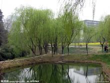
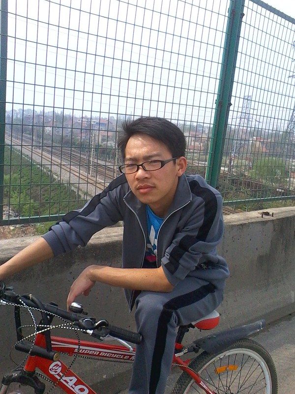
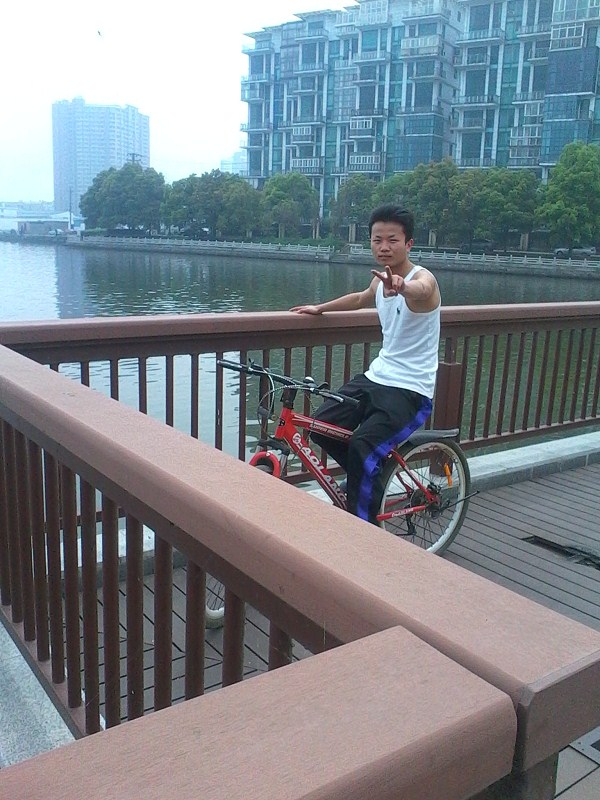
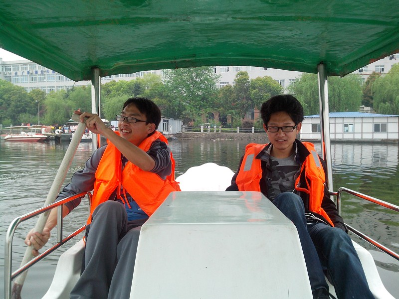
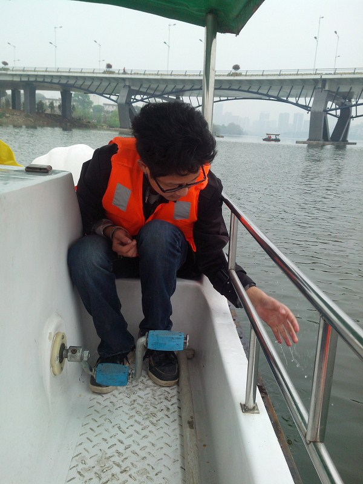
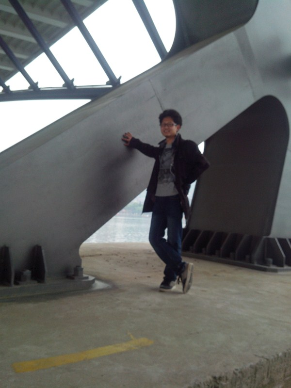
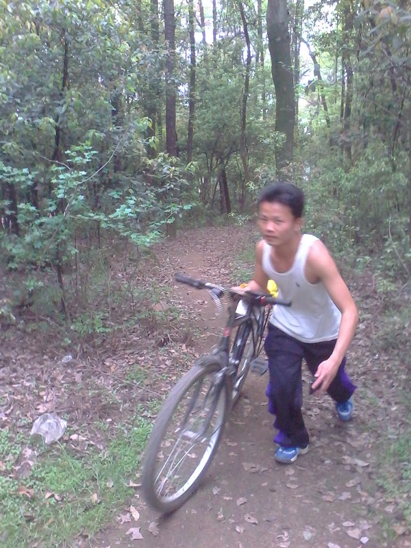
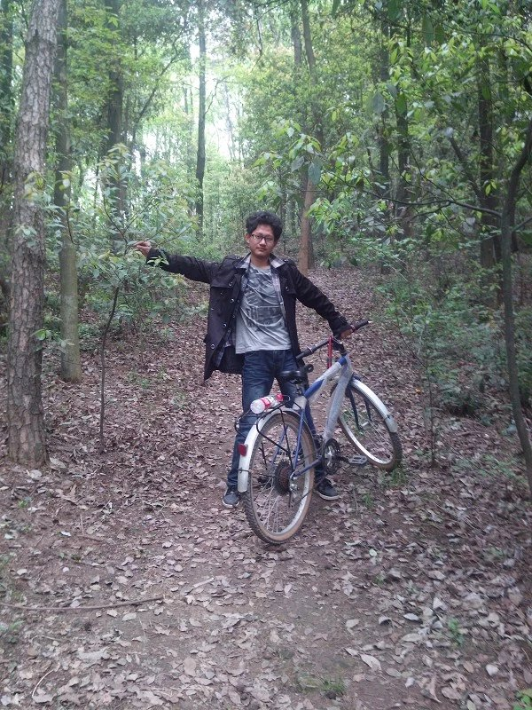
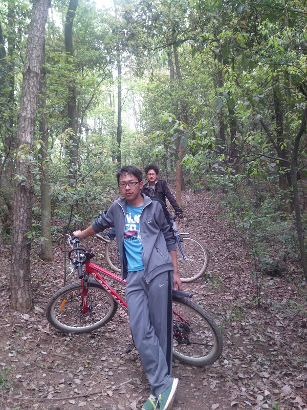

风行山水·忆录
（一直想写一篇游记日志，正好上周六出游了一次，有可忆之处，遂记下）

我们出发的时间大概十点左右，意招十全十美，因为这一次的骑车之旅比上一次挑战更大，从最后跨时来看，上午十点到晚上八点，其行程之远、路程之艰、维时之久为此前最强。
草草解决“早中”饭，再次确定了此行的目标——东湖景区，由于三人都不是武汉的主，加之鄙人的地图知识仅限于初中，之后就一直处于过了保质期未处理状态，故“导游”这任务就落不到我。其实，，，我这是废话，伟早就拟定好了往返路线，其详还可供选择，，，想当年那厮寒假回家都舍火车取单车，天寒地冻，风雪无阻，，，，，，我还有什么好说的呢。
子曰：远路险中近。阿拉果断上了三环线路。高架上，风声蔽耳，车行闪电，吾等谨慎急行，取道之右之右侧尔，几欲贴行高架的护栏，而不敢越左之雷池半步矣。期间，权问伟曰：此途险矣，还余几何？
伟曰：应该还有一千多米！停高架之上一处休息点，饮水。。。高架上的风永远不知疲倦，快车疾过，脚底传来阵阵微颤，那日我们达成共识：行车诚可贵，赶路价更高，
若为高架故，二者皆可抛。以至于对返回路线，我们毅然决然的选择不走高架。行车依旧继续，风使劲得擦干我的汗水，高架下有一条小河流淌缓缓，我记起有人曾说过：风萧萧兮一水寒，我的头发又吹乱。。。。。。
 啊，下了高架，见到的终于不单是铁盒子了，我们还遇到了另一队人马，知音呐，不解释，相顾一笑，赶路不止。
。。匆匆途中，一条直达路线遇死胡同，哎，按图索湖，终究是纸上谈兵，实验才是检验真理的唯一标准。
So
战略性转移又殆耗了不少时间，好在途遇一湖——南湖，水光潋滟，修身养性。特别是湖岸的木质板路，轮胎与木板间隙发出的沙沙轻吟，让人不得不静下心来，聆听这美妙的天籁。加之透过板隙，引出的细细凉风，哈哈，妙
!
妙！终究不虚此行。。。。。前路茫茫，我心期待。。
 任时光匆匆走过，我只在乎你——东湖。岐路多艰呐（忆失，此处省略
N
个字），几经颠簸，哥几个终于到了。咱毕竟是道上混的，到湖里只有任人宰割了。
兄弟几个凑了钱，压了一百，挑了个最低碳环保的，不过，这船的速度真不是盖的，任尔千踏万踩，其自岿然不动。。。。，然志在山水者，心乎山水，意随山水，东湖之水算是我见过较为清澈幽然的，它没有江河的奔腾活力，没有泽宇的雄浑壮阔，没有泉溪的窸窸小闹，却有着与心浑然一体的空灵，与意丝连气接的安谧，与情相濡不斥的爱恋。悠悠止水，我取一瓢，触，而未有一丝的粘稠；视，而未有一丝纤浊；闻，而未有一丝腥涩；饮，而未有一丝。。。额，我好像没有喝过。。。清风徐来，水波不起，东湖之水，寐若西子。放一首清歌伤曲，虽无丝竹管弦之胜，亦不乏雅闲高趣。忽然，水面波涛涌动，浪遏群舟，惶然索因，一快艇飚过，顿时有口出“艹”言之欲。行船途中，船体擦伤两次，配桨脱手一次，招呼美女一次，两船碰擦一次，其余尔尔已忘，登岸，继续。。。。
由于时日尚早，故我们又绕湖岸游玩，湖中船体各异，还有单人的赛舟，悔其未查清情况矣！ 湖岸有山，我们随即行车登山，庆幸山中有路，虽陡且颠簸，但行之兴更旺，山上树木葱郁，然无明虫显鸟之声，徒登片刻，见一亭，荒芜之至，皆度此山无胜景，故反。吾下山顺势，刹车微效，快而险，刺激！！然推车其下

者，权微崴其脚。本来还想去那个叫什么莫山风景区的，但是天不早了，伟提议夜宿，余念《爱情公寓 3 》中有言：半夜两点半不回家，准没好事。舍去，仅有一解，回。。。。。
回归途中，因不走高架，故九转绕道，期间盲跌两次，虽肌体生痛，但革命之路尚未完成，岂敢懈怠。月明星稀，赶路不息。。。。。。。。。。。。。归室时，已八时有余，
shower
，
and sleep
。。。。
哦，对了，每次出校，我都不得不说一句武汉的交通：
shit
！